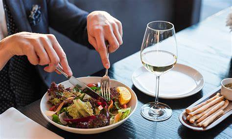

Coma uma variedade de frutas e vegetais.

Inclua proteínas magras, como peixe e frango.

Inclua carboidratos complexos, como grãos integrais e batatas.

Faça escolhas alimentares saudáveis ??quando comer fora de casa.
Beba muita água e evite bebidas açucaradas.
Limite o consumo de alimentos processados e embutidos.